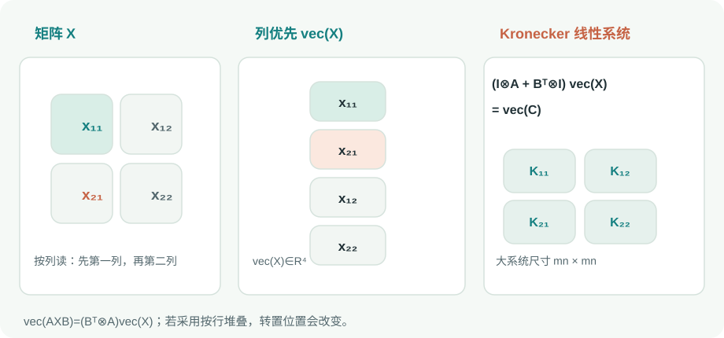
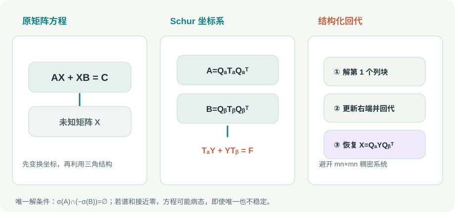

01 / Kronecker 积：把一个矩阵的每个元素替换成一个矩阵块
若 A 是 m×n、B 是 p×q，Kronecker 积 A⊗B 会把 A 的每个元素 aᵢⱼ 替换成块 aᵢⱼB，结果尺寸为 mp×nq。它把两个线性变换的张量积结构编码为一个更大的线性算子。
最常用的性质是混合积：在维度匹配时 (A⊗B)(C⊗D)=(AC)⊗(BD)。还有转置、共轭转置、迹、行列式和特征值的对应关系。若 A、B 分别是 m×m、n×n 方阵，A⊗B 的特征值是两组特征值的所有乘积；这使 Kronecker 积自然出现在多维线性系统和矩阵正态分布中。
Kronecker 积也会造成维度膨胀：两个 n×n 矩阵的 Kronecker 积是 n²×n²，元素数达到 n⁴。它是推导矩阵方程的重要记号，却通常不是应该显式分配的数值对象。
02 / vec 恒等式：列优先顺序决定转置放在哪里
vec(X) 把矩阵按列依次堆叠成一个向量。对 X∈R^{n×p}，先写第一列的 n 个元素，再写第二列，依此类推。采用这个固定约定，任意维度匹配的 A、X、B 满足：

验证方法是看第 j 列：AX 的每一列是 A 乘以 X 的对应列；右乘 B 则对这些列作线性组合。列堆叠之后，B 的系数以 Bᵀ⊗A 的块结构作用于 vec(X)。这个恒等式不仅用于矩阵方程，也用于矩阵参数线性模型、协方差算子和张量展开。
03 / Sylvester 方程：什么时候有唯一解？
给定 A∈R^{m×m}、B∈R^{n×n}、C∈R^{m×n}，求 X∈R^{m×n} 使 AX+XB=C。利用 vec 恒等式可写成一个 mn 维线性系统；它说明唯一解条件来自 Kronecker 和的可逆性。
唯一解当且仅当 A 与 −B 没有公共特征值，即对所有 i,j 都有 λᵢ(A)+λⱼ(B)≠0。如果这些和虽然非零但非常接近零，方程仍可能严重病态：唯一性是代数性质，数值稳定性还要看谱分离与系数矩阵条件数。
04 / Bartels–Stewart：用 Schur 结构避开巨大 Kronecker 矩阵
显式求解 mn×mn Kronecker 系统会丢失矩阵方程本身的结构。Bartels–Stewart 算法先分别计算 A、B 的 Schur 分解，再变换未知量和右端项，将原方程变成三角或准三角矩阵方程，最后按列或小块回代。

这里 Y=Qₐ* X Qᵦ，F=Qₐ* C Qᵦ，星号表示共轭转置（实数域为转置）。SciPy 的 solve_sylvester 使用 Bartels–Stewart 路线，内部依赖 LAPACK 的 TRSYL 例程。对于方阵规模 n，结构化算法的工作量是立方量级，而显式 mn 维稠密系统的直接消元会昂贵得多。
05 / Lyapunov 方程：矩阵方程如何判定线性系统稳定性
连续时间线性系统 ẋ=Ax 渐近稳定，当且仅当 A 是 Hurwitz 矩阵（所有特征值实部严格为负）。对任意 Q≻0，Lyapunov 方程 AX+XAᵀ=−Q 存在唯一对称正定解 X；反过来，若存在这样的 X、Q，则系统渐近稳定。
定义能量函数 V(x)=xᵀXx。沿系统轨迹求导得到 V̇=−xᵀQx<0，因此状态能量严格下降。SciPy 的 solve_continuous_lyapunov(A,Q) 采用 AX+XAᴴ=Q 的右端符号约定；若数学上写成负 Q，调用时应传入 −Q。
06 / 复算：从已知 X 构造 C，再用 vec 检查
def matmul(A,B):
return [[sum(A[i][k]*B[k][j] for k in range(len(B)))
for j in range(len(B[0]))] for i in range(len(A))]
def add(A,B):
return [[A[i][j]+B[i][j] for j in range(len(A[0]))]
for i in range(len(A))]
def transpose(A):
return [list(row) for row in zip(*A)]
def vec_col(X):
return [X[i][j] for j in range(len(X[0])) for i in range(len(X))]
def kron(A,B):
return [[A[i][j]*B[r][c]
for j in range(len(A[0])) for c in range(len(B[0]))]
for i in range(len(A)) for r in range(len(B))]
A=[[1.,0.],[0.,2.]]
B=[[3.,0.],[0.,4.]]
X=[[1.,2.],[3.,4.]]
C=add(matmul(A,X),matmul(X,B))
assert C==[[4.,10.],[15.,24.]]
# Verify (I kron A + B^T kron I) vec(X) = vec(C).
I=[[1.,0.],[0.,1.]]
K=add(kron(I,A),kron(transpose(B),I))
v=vec_col(X)
kv=[sum(K[i][j]*v[j] for j in range(4)) for i in range(4)]
assert kv==vec_col(C)==[4.,15.,10.,24.]
# Lyapunov: A=-I, Q=2I gives X=I in AX+XA^T=-Q.
Al=[[-1.,0.],[0.,-1.]]
Q=[[2.,0.],[0.,2.]]
XL=[[1.,0.],[0.,1.]]
lhs=add(matmul(Al,XL),matmul(XL,transpose(Al)))
assert lhs==[[-2.,0.],[0.,-2.]]
print("Sylvester vec identity and Lyapunov sign convention verified")预期 C=[[4,10],[15,24]]，列优先 vec(C) 为 [4,15,10,24]。Lyapunov 例中 A=−I、Q=2I、X=I 满足 AX+XAᵀ=−Q。
参考资料与数值实现
- Cornell CS 6210：Sylvester 方程、vec 恒等式与 Bartels–Stewart
- SciPy solve_sylvester：Schur 分解与 LAPACK TRSYL
- SciPy solve_continuous_lyapunov：符号约定与 Bartels–Stewart
矩阵维度与向量化约定在本页固定为实数域、列优先 vec；复数情形将转置替换为共轭转置。